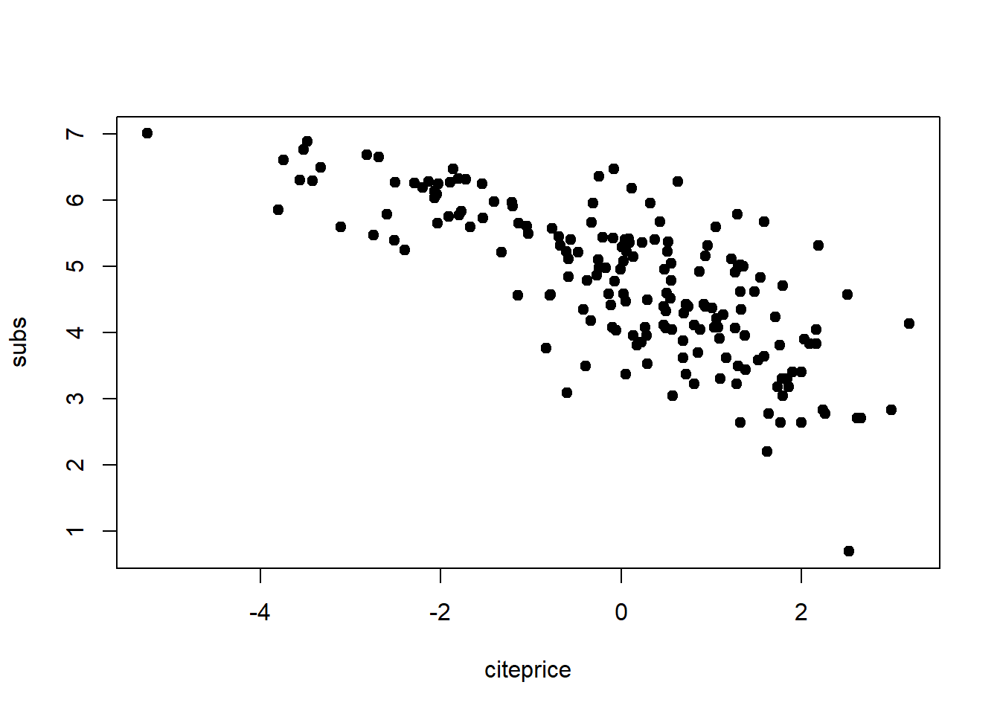
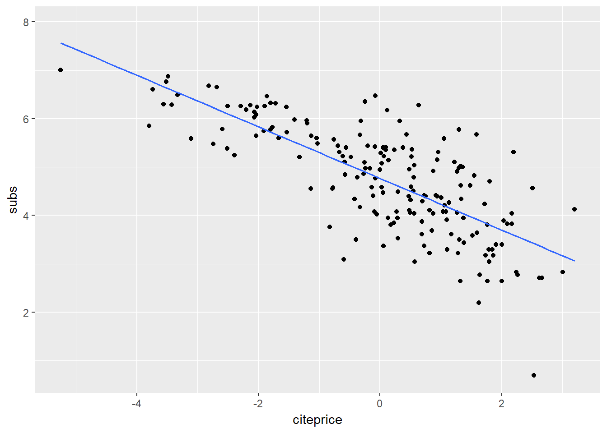
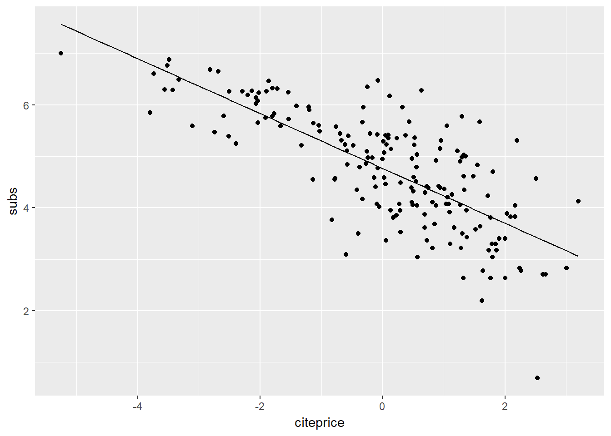
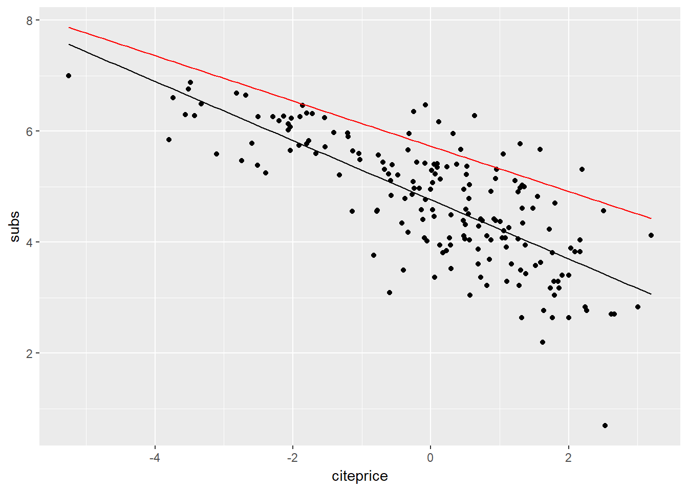
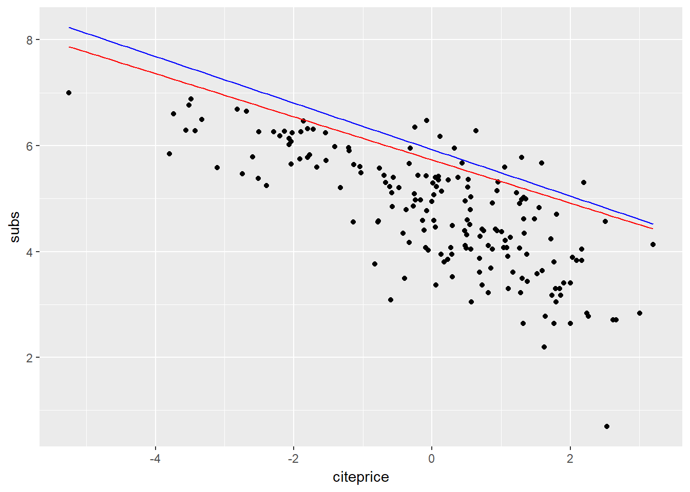
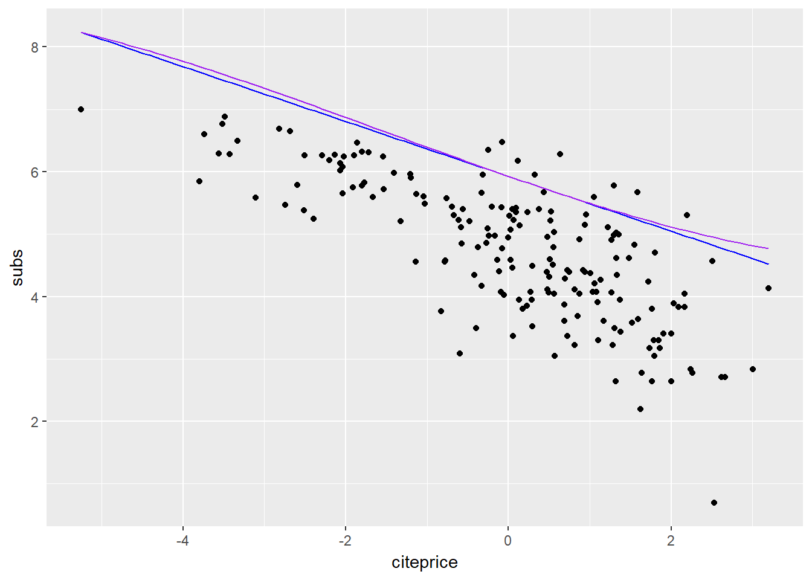

library(knitr)
library(tidyverse)
library(broom)
library(mosaic)
library(AER)データを次のように整形
data("Journals", package = "AER")
journals <- Journals %>%
mutate(citeprice = price/citations,
age = 2000 - foundingyear,
chars = charpp*pages/10^7) %>%
select(subs,price,citeprice,age,chars)基本統計量は以下のとおりである.
inspect(journals)##
## quantitative variables:
## name class min Q1 median Q3
## 1 subs integer 2.000000000 52.0000000 122.5000000 268.2500000
## 2 price integer 20.000000000 134.5000000 282.0000000 540.7500000
## 3 citeprice numeric 0.005222803 0.4644950 1.3205128 3.4401713
## 4 age numeric 4.000000000 17.7500000 27.0000000 37.2500000
## 5 chars numeric 0.055063800 0.1657681 0.2187661 0.3182933
## max mean sd n missing
## 1 1098.000000 196.8666667 204.5288468 180 0
## 2 2120.000000 417.7222222 385.8345964 180 0
## 3 24.459459 2.5484546 3.4664437 180 0
## 4 156.000000 33.0944444 25.7114841 180 0
## 5 1.012794 0.2672651 0.1600183 180 0対数表記して散布図を表示する.
plot(subs ~ citeprice, data = log(journals), pch = 19)
単回帰式の結果である.
fm1 <- lm(subs ~ citeprice, data = log(journals))
summary(fm1) %>% tidy() %>% kable()| term | estimate | std.error | statistic | p.value |
|---|---|---|---|---|
| (Intercept) | 4.7662121 | 0.0559091 | 85.24934 | 0 |
| citeprice | -0.5330535 | 0.0356132 | -14.96786 | 0 |
回帰直線は次のようにして表示する.
plot(subs ~ citeprice, data = log(journals), pch = 19)
abline(fm1)パッケージ ggformula を使えば以下のコマンドを実施する.
gf_point(subs ~ citeprice, data = log(journals)) %>% gf_lm()
パッケージ mosaic の makeFun で関数を作成すれば, gf_fun を使うこともできる.
fn1<-makeFun(fm1)
gf_point(subs ~ citeprice, data = log(journals)) %>% gf_fun(fn1)
多変量回帰モデルのときは gf_fun のほうが柔軟に対応できる. 結果は以下の通り.
fm2 <- update(fm1, .~ citeprice + age + chars)
summary(fm2) %>% tidy() %>% kable()| term | estimate | std.error | statistic | p.value |
|---|---|---|---|---|
| (Intercept) | 3.6800919 | 0.3328895 | 11.054994 | 0.0000000 |
| citeprice | -0.4077182 | 0.0419604 | -9.716748 | 0.0000000 |
| age | 0.4236486 | 0.0897157 | 4.722122 | 0.0000047 |
| chars | 0.2056141 | 0.1074660 | 1.913295 | 0.0573336 |
図の軸に表示しない変数は平均値として図示すると以下になる.
fn2 <- makeFun(fm2)
fn2m <- makeFun(fn2(citeprice, age=mage, chars=mchars) ~ citeprice,
mage = with(log(journals), mean(age)),
mchars = with(log(journals), mean(age)))
gf_point(subs ~ citeprice, data = log(journals)) %>%
gf_fun(fn1) %>% gf_fun(fn2m,color="red")
交差項は次のようにして組み込むことができる.
fm3 <- update(fm1, .~ citeprice * age + chars)
summary(fm3) %>% tidy() %>% kable()| term | estimate | std.error | statistic | p.value |
|---|---|---|---|---|
| (Intercept) | 3.9618858 | 0.3369330 | 11.758676 | 0.0000000 |
| citeprice | -0.8989097 | 0.1615082 | -5.565722 | 0.0000001 |
| age | 0.3735148 | 0.0889742 | 4.198014 | 0.0000428 |
| chars | 0.2294661 | 0.1051262 | 2.182767 | 0.0303848 |
| citeprice:age | 0.1409591 | 0.0448348 | 3.143963 | 0.0019584 |
図の軸に表示しない変数は平均値として図示すると以下になる.
fn3 <- makeFun(fm3)
fn3m <- makeFun(fn3(citeprice, age=mage, chars=mchars) ~ citeprice,
mage = with(log(journals), mean(age)),
mchars = with(log(journals), mean(age)))
gf_point(subs ~ citeprice, data = log(journals)) %>%
gf_fun(fn2m,color="red") %>% gf_fun(fn3m,color="blue")
多項式は次のように組み込むことができる.
fm4 <- update(fm3, .~ . + I(citeprice^2) + I(citeprice^3))
summary(fm4) %>% tidy() %>% kable()| term | estimate | std.error | statistic | p.value |
|---|---|---|---|---|
| (Intercept) | 3.9478229 | 0.3399169 | 11.6140812 | 0.0000000 |
| citeprice | -0.9609365 | 0.1892198 | -5.0784127 | 0.0000010 |
| age | 0.3730539 | 0.0893609 | 4.1746887 | 0.0000472 |
| chars | 0.2346178 | 0.1061335 | 2.2105917 | 0.0283757 |
| I(citeprice^2) | 0.0165099 | 0.0241346 | 0.6840751 | 0.4948430 |
| I(citeprice^3) | 0.0036666 | 0.0068621 | 0.5343296 | 0.5937995 |
| citeprice:age | 0.1557773 | 0.0550499 | 2.8297485 | 0.0052097 |
図の軸に表示しない変数は平均値として図示すると以下になる.
fn4 <- makeFun(fm4)
fn4m <- makeFun(fn4(citeprice, age=mage, chars=mchars) ~ citeprice,
mage = with(log(journals), mean(age)),
mchars = with(log(journals), mean(age)))
gf_point(subs ~ citeprice, data = log(journals)) %>%
gf_fun(fn3m,color="blue") %>% gf_fun(fn4m,color="purple")